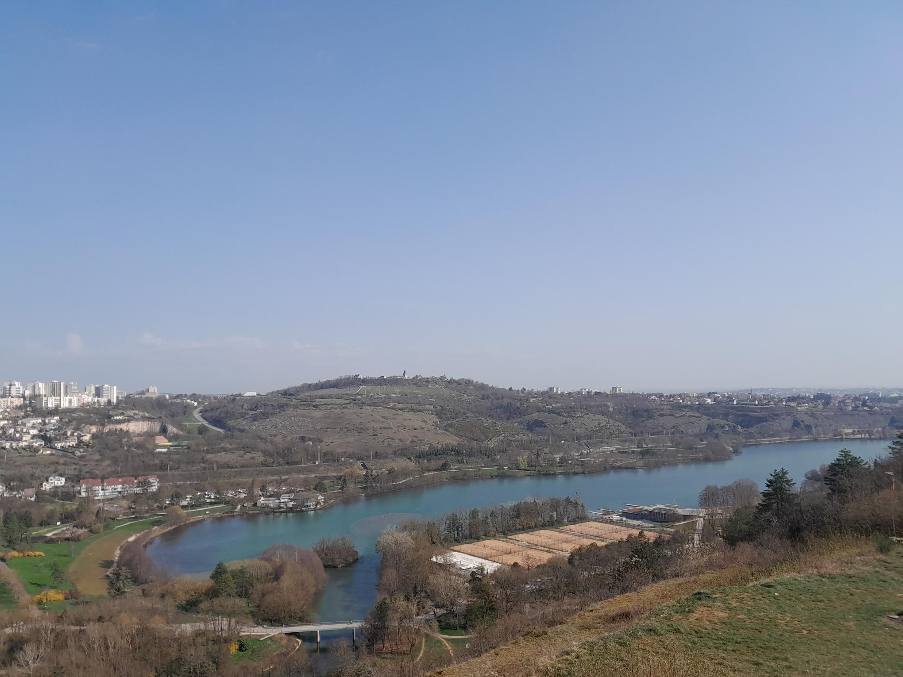
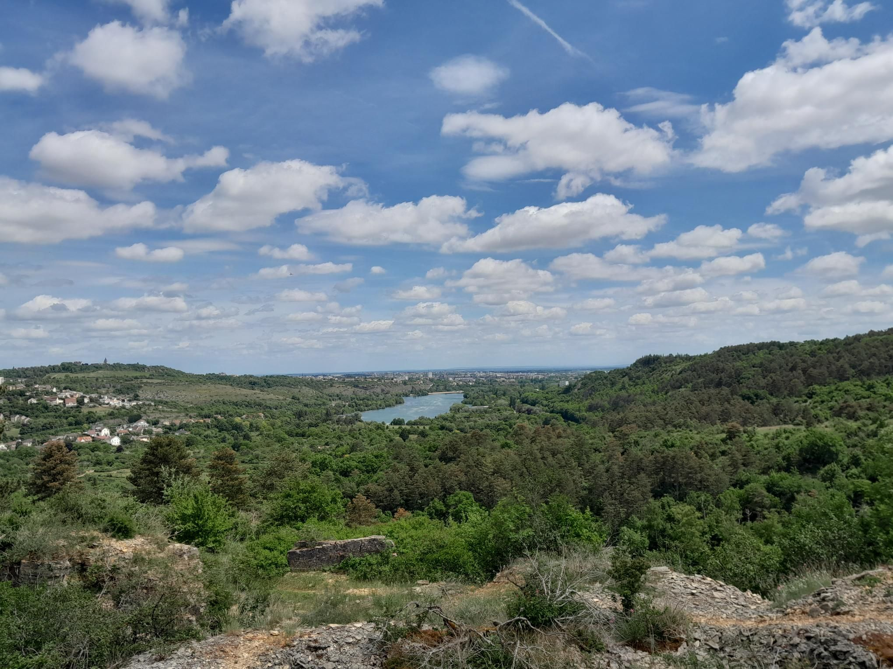
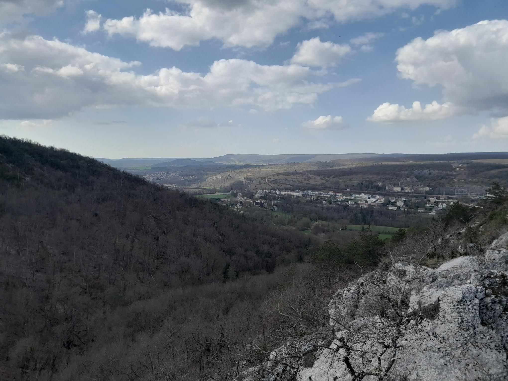
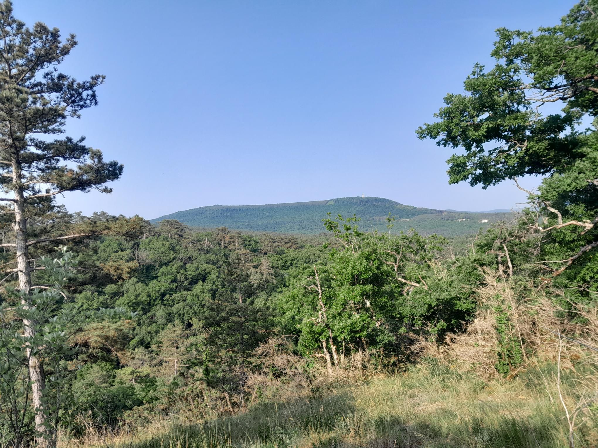

Tour de la vallée de l'ouche



Cette randonnée en boucle et en plein nature, fait le tour de la vallée de l’Ouche en passant par ses combes sud et nord. Vous passerz notament par la combe du Diable, la combe des Biches, la combe Vossenvaux ou encore la combe Vaux Marcot. Cet itinéraire est très sportif et offrira un véritable défi aux randonneurs les plus aguerris. Le sentier se déroule presque entièrement dans les combes et alterne entre passages forestiers, zones rocheuses et portions techniques. Il offre de nombreux points de vue remarquables sur le lac Kir ainsi que sur la vallée de l’Ouche.
Départ:
Parking de la combe à la Serpent
Difficulté
Type : sportif
Sens conseillé : horaire
Difficulté: 4/5
Technicité : 3/5
Précautions
Cette randonnée suit plusieurs balisages, pour ne pas vous perdre, il vous est conseillé de télécharger la trace GPX depuis cette page, afin de la suivre grâce à un gps. Certaines montées et descentes en majeure partie dans les combes sont glissantes en temps humide, de plus certaines sections présentent du vide. Ce sentier passe par des zones chassées, il vous est conseillé d'éviter ces zones-là les jours de chasse ou de prendre toutes les précautions nécessaires.
Pour voir les zones et jours de chasse en Bourgogne : chasseInfo.fr
Matérielles
Ce sentier nécessite d'avoir des chaussures de randonnée à tige basse, moyenne ou haute. Des bâtons de randonée sont conseillés. Pensez à bien vous hydrater et à vous alimenter. Prévoyez 2 jusqu'à 2.5 littres d'eau en hiver et 3 à 3.5 littres en été (par personne). Privilégier des aliments sucrés, des fruits ou des barres énergétiques. Des tables de picnic sont présentes sur le parcours et vous sont indiquées dans la description des étapes du parcours.
Etape 1
Balisage : pas de balisage
L'étape 1 ne suit pas de balisage particulier. Il vous faut alors suivre la trace gpx. Le début se situe au parking de la combe à la Serpent. À la fin de l'étape 1 vous arriverez sur un promontoire présentant une vue splendide sur le lac Kir.
Vue lac Kir
Etape 2
Balisage : rouge
L’étape 2 emprunte le sentier Jean-Montmey, aménagé par le Club alpin français de Dijon et balisé en rouge. Il vous suffit de suivre ce balisage tout au long du parcours. Cette portion alterne entre des passages en forêt, en lisière de champs, et un terrain parfois plus accidenté. Après une courte montée, vous atteindrez un promontoire offrant une belle vue sur le lac Kir. Poursuivez ensuite en suivant les marques rouges jusqu’à rejoindre une route.
Vue lac Kir
Etape 3
Balisage : rouge et jaune
L’étape 3 emprunte le sentier Charles Thévenin, également aménagé par le Club alpin français de Dijon, et balisé en rouge et jaune (deux traits côte à côte). Traversez la route en poursuivant tout droit pour rejoindre ce sentier, puis suivez ce balisage. Cette portion est la plus sportive du parcours. Elle traverse plusieurs combes, avec des montées et descentes raides et parfois accidentées : la prudence est donc essentielle. Vous longerez d’abord un chantier avant d’atteindre la première combe, la combe de la Gras. Une fois au fond, la montée suivante est raide et souvent humide ; n’hésitez pas à vous aider des mains. Vous franchirez ensuite la combe Grivelle pour rejoindre la combe du Diable. Cette dernière offre une vue remarquable sur la commune de Velars-sur-Ouche et sa ligne de chemin de fer. La descente qui s’y trouve est la plus technique du sentier, notamment en raison d’un passage dans un pierrier.
Combe du diable
Etape 4
Balisage : croix blanche
Variante : cette section est composé d'une variante. Celle-ci coupe directement en direction de Velars-sur-Ouche au niveau de la roche du Crucifix. Elle réduit la distance totale de 2,7 km et le dénivelé positif de 192 m (1.6km, 35m↑, 48m↓)
L’étape 4 emprunte le sentier Jean Sage, aménagé par le Club alpin français de Dijon et balisé par des croix blanches. Attention, au début de cette étape, il vous faudra continuer tout droit en direction du canal, sans suivre le balisage rouge et jaune qui s’engage dans une nouvelle pente. Après environ 300 m, tournez à gauche : vous arriverez à la roche du Crucifix. Il vous suffira ensuite de suivre le balisage blanc du sentier Jean Sage. Cette portion est assez technique et offre plusieurs points de vue sur la commune de Velars-sur-Ouche et ses environs. À la fin de la section rocheuse, vous apercevrez au loin la chapelle Notre-Dame d’Étang, nichée sur son promontoire. Après avoir traversé la combe Maréchal, vous rejoindrez la combe Bertrand, qui marque la fin de la section sportive du sentier. Une fois celle-ci franchie, continuez à suivre les croix blanches en direction du mont Afrique. Après une courte montée, vous arriverez à son pied.

Vue N.D d'Étang
Etape 5
Balisage : jaune
L’étape 5 suit un balisage jaune. Une fois la combe Bertrand franchie, vous arriverez à une intersection où il vous faudra prendre à droite en direction de Velars-sur-Ouche, en suivant le balisage jaune. Suivez un petit chemin en descente pour rejoindre Velars-sur-Ouche. Continuez à suivre le balisage jaune jusqu’à la fin de l’étape 5.
Etape 6
Balisage : rouge
L’étape 6 suit un balisage rouge. Traversez Velars-sur-Ouche en suivant ce balisage ; vous arriverez ensuite sur les hauteurs du village. Dans la suite du sentier, vous évoluerez dans les combes nord de la vallée de l’Ouche. Vous passerez notamment par la combe Bouchard. Une fois celle-ci franchie, vous arriverez au pied du pont du chemin de fer de Velars-sur-Ouche. Continuez à suivre le balisage rouge jusqu’à la fin de l’étape 6 pour arriverez a une intersection.
Etape 7
Balisage : blanc
L’étape 7 suit un balisage blanc, aménagé par le Club alpin français. À l’intersection, prenez à droite en suivant ce balisage. Vous franchirez ensuite la combe des Biches, puis la combe Vossenvaux ainsi que la combe Vaux Marcot. Vous arriverez alors en périphérie de Plombières-lès-Dijon. Continuez à suivre le balisage blanc, qui vous mènera dans la combe aux Noyers, puis sur un chemin montant vers les hauteurs du village .
Etape 8
Balisage : rouge
L’étape 8 suit le sentier Jean-Montmey, aménagé par le Club alpin français et balisé en rouge. Suivez ce balisage en direction du lac Kir ; vous traverserez un parc équipé de tables de pique-nique. Vous franchirez ensuite les combes qui surplombent le lac Kir, offrant de magnifiques panoramas sur celui-ci. Continuez à suivre le balisage rouge jusqu’à redescendre au niveau du lac. Poursuivez ensuite en direction de Fontaine-d’Ouche, toujours en suivant le balisage, jusqu’à atteindre le stade de Fontaine-d’Ouche.
Etape 9
Balisage : pas de balisage
Au stade de Fontaine-d’Ouche, parté en direction de la combe à la Serpent pour bouclé cette itinéraire.